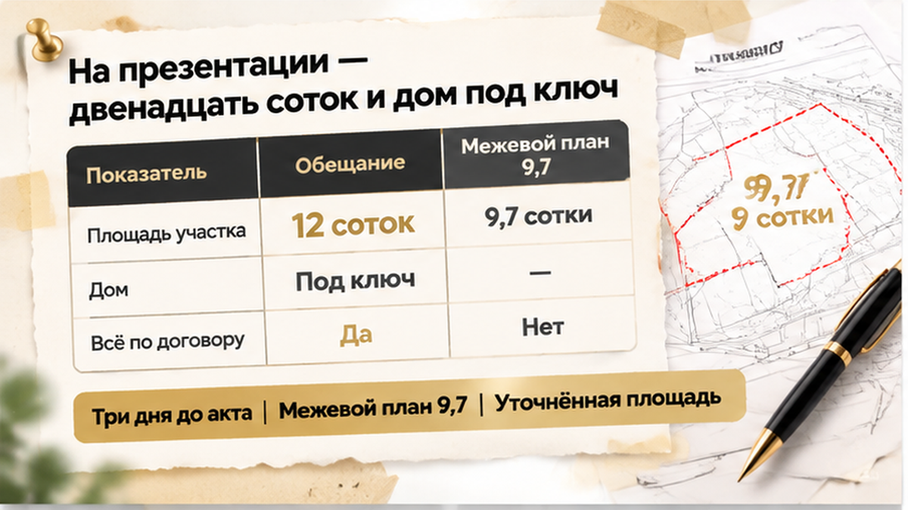
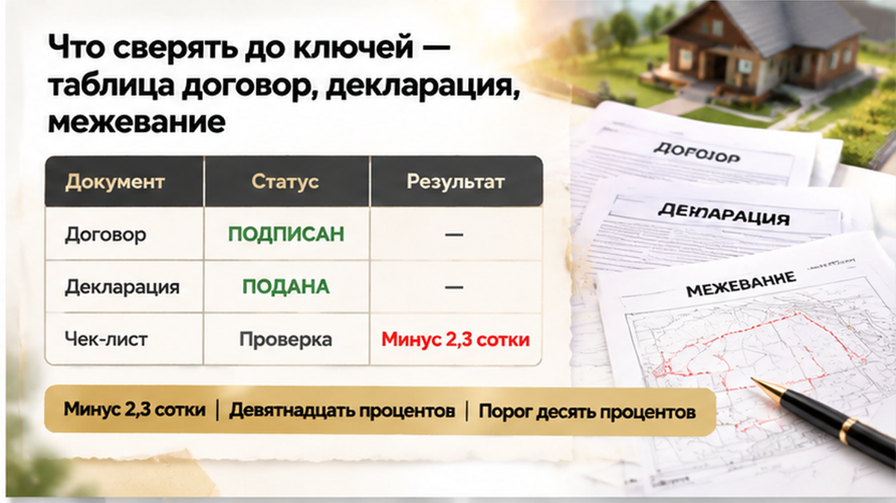
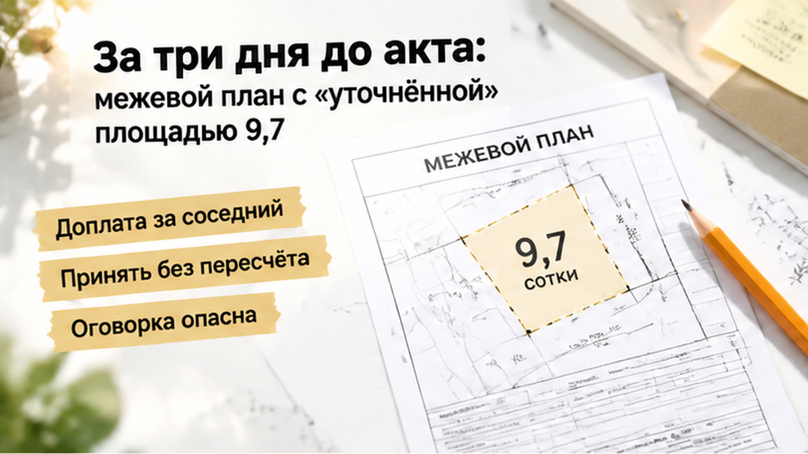

В Тюмени семья купила дом с участком 12 соток, а за три дня до передачи получила межевой план на 9,7 — и осталась без ключей. Дом был готов, уведомление о передаче пришло, но вместо обычной приёмки на стол легли два документа с разными цифрами: в договоре — 12 соток, в межевом плане — меньше 10. Застройщик предложил принять уменьшенный участок без пересчёта цены или доплатить за соседний фрагмент. Семье пришлось выяснять, какую землю она покупала и какую теперь ей предлагают принять.
Я Святослав Шакин, The Риэлтор, Тюмень. Разбираю документы и спорные моменты покупки новостроек простым языком — в Telegram и MAX. Чтобы такие вопросы появлялись до передачи денег, а не за несколько дней до ключей.
В этой истории 12 соток были не просто цифрой из презентации. Площадь указали в договоре долевого участия и на схеме планировочной организации участка — документе, где показано размещение дома на земле. Для семьи это была записанная в договоре характеристика покупки.
Покупка шла по ДДУ со счётом эскроу: деньги ещё не перечислили застройщику. Но само слово «эскроу» не отвечает на вопрос, совпадает ли обещанная земля с той, которую оформляют. Это нужно проверять по договору и приложениям: что передают, как описан участок и что происходит при изменении площади.
Я бы положил рядом договор и приложения — не рекламный буклет, переписку или устное «так бывает». Принцип проверять условия ДДУ до перечисления денег относится не только к площади дома. Земля под ним — такая же часть покупки.

После уведомления о готовности семья получила межевой план с отметкой «уточнённая площадь». Кадастровый инженер описывает в нём границы участка через координаты и указывает площадь. Так появилась новая цифра — 9,7 сотки.
До подписания передаточного акта оставалось три дня. Дом готов, ключи близко, семья мысленно переезжает — и вдруг выясняется, что участок, за который договаривались платить, на бумаге стал другим.
Слово «уточнённая» звучит безобидно, будто землю просто перемерили. Но межевой план сам по себе не переписывает условия подписанного ДДУ и не решает, кто должен платить за разницу. Нужно понять, почему изменились границы, как они соотносятся с документами проекта и что договор говорит о расчётах при изменении площади.
Ответ «так намерили» вопрос не закрывает. Межевание не заменяет договор и не разрешает автоматически выдать меньше земли. Передаточный акт здесь тоже не формальность ради ключей: вместе с домом оформляются параметры участка, которые должны совпадать с тем, что принимает покупатель. Поэтому расхождение важно разобрать до подписи — готовность дома не отменяет вопроса о том, какую землю семья принимает вместе с ним.

Сначала кажется: ну что такое эти две с половиной сотки? Но здесь пропали не 2,5, а 2,3 сотки — 230 квадратных метров. От обещанных 12 соток это 19,2%, почти пятая часть участка.
Дом от этого меньше не стал: стены стоят, крыша на месте, уведомление о готовности пришло. Но семья покупала не только дом — земля тоже была частью договора. Заменить участок на меньший только потому, что дом уже построен, нельзя считать мелкой поправкой.
Если умножить недостающие сотки на ориентир 370 тысяч рублей за сотку, получится около 850 тысяч рублей. Но это не установленная переплата семьи. Ориентир взят из объявлений, а не из оценки именно этого участка; в тюменских предложениях встречаются цифры примерно от 167 тысяч рублей за сотку. Поэтому требование о деньгах нельзя строить на одном умножении: нужны договор, документы проекта и понятный расчёт.
Для кадастрового учёта важна не только разница между цифрой в ДДУ и межевом плане. Закон предусматривает приостановление учёта, если площадь образуемого участка расходится с утверждённым проектом межевания территории больше чем на 10%.
ПМТ — это документ, по которому территорию делят на отдельные участки. В данном случае уменьшение относительно ДДУ этот порог превышает. Но сравнивать нужно межевой план именно с ПМТ: по одним цифрам 12 и 9,7 нельзя обещать семье, что Росреестр обязательно откажет в учёте.
Фраза «там всего несколько соток» ничего не решает. Для покупателя это может быть место под баню, сад или парковку, а для документов — конкретная характеристика объекта, которую нельзя тихо заменить другой.

Застройщик предложил семье два варианта: доплатить за соседний фрагмент либо принять 9,7 сотки без пересчёта цены. На словах выбор простой: хотите сохранить задуманный участок — доплатите, нужны ключи быстрее — подписывайте то, что есть. Но главный вопрос остаётся: почему вместо 12 соток из договора предлагают другую площадь?
Семье нужен письменный ответ. В документах должно быть понятно, почему изменилась площадь, как новый участок связан с проектом и что договор говорит о расчётах.
Соседний фрагмент тоже нельзя добавить разговором: потребуется оформить границу, определить координаты и закрепить права на землю. То, что кусок находится рядом, ещё не делает его частью участка семьи. Доплата без оформления оставит только новое обещание, а позже могут потребоваться кадастровые процедуры или отдельное оформление права.
Принять 9,7 сотки без пересчёта — тоже не техническая формальность. В конкретном ДДУ может быть указано, как стороны действуют при изменении площади. Этот пункт нужно прочитать до ответа застройщику, а не после подписания акта.
Сам межевой план не запускает автоматически возврат части цены. Вопрос может решаться соглашением, претензией или спором — в зависимости от текста договора и подтверждающих документов.
Поэтому универсальная формула «подпишите с оговоркой» опасна. Такая фраза в акте не обязательно полностью сохраняет права покупателя: последствия зависят от самого акта, договора и содержания оговорки. Подпись не должна подменять разбор того, что именно передают.
В другой истории на приёмке вместо обещанной отделки оказались голые стены. Там предмет расхождения был другим, но смысл тот же: передаточный акт — не место, где покупатель молча соглашается с тем, чего не было в договорённости.
Обычный покупатель видит два неприятных варианта и торопится выбрать менее болезненный. Профессионал возвращает разговор к исходным документам: что записано в ДДУ, предусмотрено проектом и какую землю застройщик действительно готов передать.
Семья отказалась подписывать передаточный акт, направила застройщику претензию и заказала независимое межевание. Ключи формально не выдали, спор продолжается: возврата части цены и оформленного увеличения участка пока нет.
Это не победа, но важное решение: покупатели не подтвердили приёмку земли, параметры которой расходятся с договором. Подпись под актом не должна становиться платой за ключи.
Деньги пока находятся на счёте эскроу и застройщику не перечислены. Но эскроу — не банковская блокировка по желанию покупателя: перечисление зависит от закона и договора, а не только от подписи под актом. Основания нужно проверить по документам проекта и отдельно уточнить в банке. В разборе о том, что происходит с деньгами на эскроу, пока покупатель ждёт ключи, важна та же граница: защищённый счёт не оплачивает ожидание жилья.
Аренда и текущие платежи не прекращаются, поэтому предложение «подписать сейчас, разобраться потом» особенно давит на бюджет. Но отказ от акта сам по себе не создаёт права на неустойку: её считают отдельно, сопоставляя срок передачи по ДДУ, уведомление застройщика, причины отказа и правила для этих дат.
В договоре КП 12 соток, на межевании 9,7: вы бы подписали акт «с оговоркой» ради ключей или заморозили бы сделку, даже если аренда съедает бюджет?
Начинать стоит не со скидки, а с документов, которые должны описывать один и тот же участок. Для индивидуального дома в малоэтажном жилом комплексе по ДДУ важны площадь и границы, проектная декларация на дату договора, ППТ — проект планировки территории — и ПМТ, проект межевания территории, где предусмотрено образование отдельных участков.
Это относится именно к такой схеме долевого строительства. Не каждый коттеджный посёлок продаёт дома по ДДУ с эскроу, поэтому само слово «эскроу» не отвечает на вопрос, какая земля должна перейти покупателю.
| Документ | Что сопоставить | Где возникает вопрос |
|---|---|---|
| Подписанный ДДУ и схема участка | Площадь, обозначение участка, цену и порядок расчётов при изменении площади | Есть ли договорное основание менять площадь или цену и как это оформляется |
| Проектная декларация, ППТ и ПМТ | Характеристики участка в договоре и утверждённых документах проекта | Совпадает ли обещанный участок с тем, который предусмотрен проектом |
| Межевой план | Площадь, координаты границ, сведения о кадастровом инженере | Чем объяснено расхождение и подтверждает ли его независимая съёмка |
| ЕГРН и проект передаточного акта | Кадастровые номера, площадь и сведения о границах после постановки на учёт | Какую именно землю предлагают принять и соответствует ли она договору |
Порог расхождения более 10% относится к сравнению площади с утверждённым ПМТ, а не просто с рекламой или цифрой в ДДУ. В этой истории уменьшение относительно договора больше такого порога, но вывод делают после сопоставления документов проекта.
С 1 марта 2025 года отсутствие в ЕГРН сведений о границах ограничивает регистрационные действия по сделкам с землёй. Контрольную съёмку выполняет кадастровый инженер: она проверяет координаты и фактическую площадь, но сама не меняет цену и условия ДДУ.
В Telegram и MAX разбираю документы новостроек Тюмени простым языком. Сохраняйте разбор, если впереди выбор дома или приёмка.
До аванса можно сопоставить площадь в договоре с декларацией и ПМТ. Если расхождение обнаружилось перед ключами, запросите письменное объяснение, проверьте межевой план и закажите независимую съёмку до перечисления денег с эскроу застройщику.
Семья не приняла спорную площадь молча и направила претензию. Это ещё не возвращённые сотки и не оформленная победа, зато требования можно обсуждать по договору, межеванию и координатам, а не по обещанию менеджера.